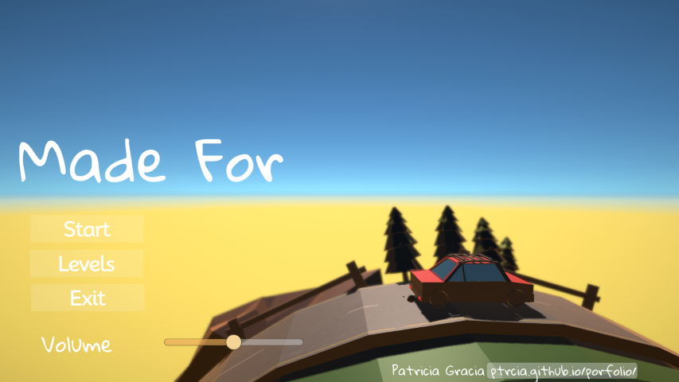
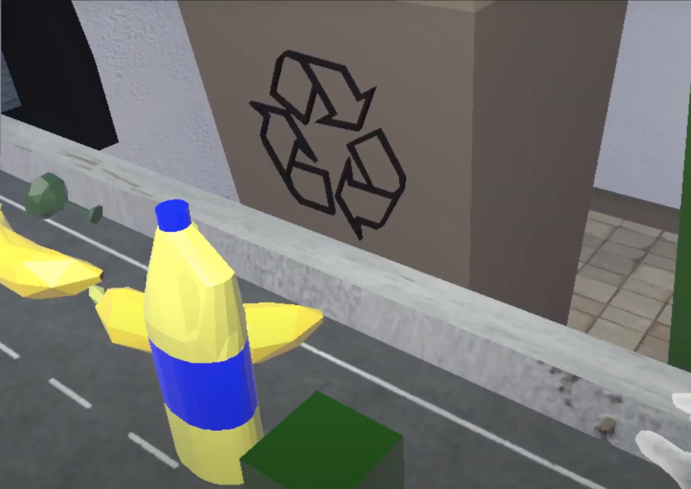
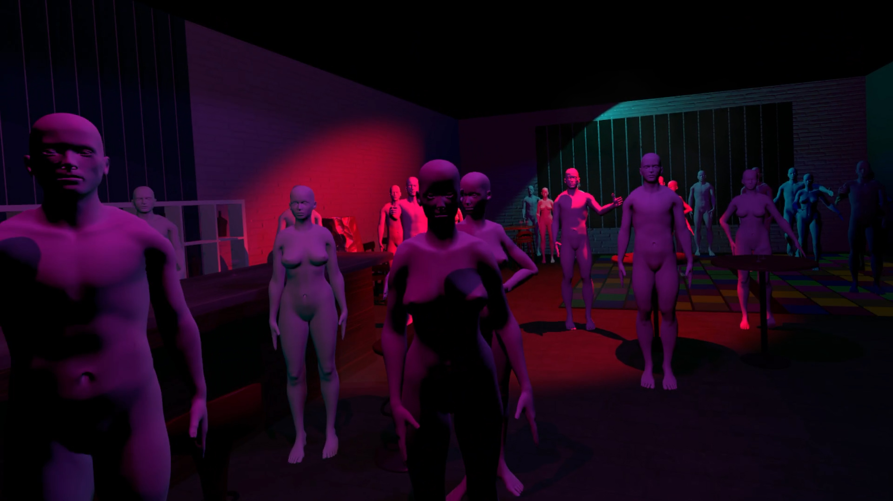

Made For
Año
2023
Técnica
Unity y Blender
Descripción
Made for es un pequeño juego que trata sobre la rutina, la doledad, la tristeza y la vida. Sobre todo quiero contar que, a pesar de todo, la vida tiene momentos impagables.
Made for is a little game that talks about routine, loneliness, sadness and life. Above all I want to convey that, despite all that, life has priceless moments.
Repositorio en GitHub
Itch.io
Ejecutable PC descargar
Jugar Web
Vídeo

VR-recycling
Año
2022
Técnica
Unity y Blender
Descripción
VR-Recycling es un proyecto en desarrollo que propone al usuario el reto de reciclar correctamente en un tiempo limitado.
VR-Recycling is a project in development that offers the user the challenge of recycling correctly in a limited time.
Repositorio en GitHub
Video último progreso

Komorebi 木漏れ日: El rol de la frustración en la construcción de entornos en realidad virtual basados en espacios cotidianos durante la pandemia del COVID-19
Komorebi 木漏れ日: The role of frustration in the construction of virtual reality environments based on everyday spaces during the COVID-19 pandemic.
Año
2022
Técnica
Unity y Blender
Descripción
Komorebi es una experiencia en realidad virtual construida para el Trabajo dinal de máster de Arte Visual y Multimedia de la Universiddad Politécnica de Valencia.
Komorebi is a virtual reality experience built for the Visual Art and Multimedia Master's thesis at the Universiddad Politécnica de Valencia.
Descargar v. VR
Descargar v. NO VR
Documentación
Repositorio en GitHub
Itch.io
Video walkthrough

EVICTION'T: Gana la batalla pero no la guerra
EVICTION'T: Win the battle, lose the war
Año
2021
Realizado junto con:
Carmen Martínez Segovia → Diseñadora de escenarios y mundo y artista 3D Web
Alicia Martínez López → Programadora principal y atista 3D secundaria Web
Irene Sánchez Mora → Diseñadora de personajes y narrativa y artista Web
Técnica
Unity y Blender
Descripción
Eviction’t es un serious game 2D point-and-click, que aborda la temática de los desahucios en el contexto nacional actual.
Eviction't is a serious 2D point-and-click game, which addresses the issue of evictions in the spanish context.
Jugar
GDD Game Development Document
Repositorio en GitHub

En estas cuatro paredes
In these four walls
Año
2020
Técnica
Unity y Blender.
Descripción
Entorno virtual 3D interactivo que explora las posibilidades y consecuencias de la inclusión de distintos efectos glitch en estos entornos. Trabajo final de máster en Máster en Investigación en Arte y Creacion de la Universidad Complutense de Madrid.
Interactive 3D virtual environment that explores the possibilities and consequences of including different glitch effects in these environments. Final Master's thesis at the Master's Degree in Art and Creation Research at the Complutense University of Madrid.
Jugar
Trabajo académico
Repositorio en GitHub